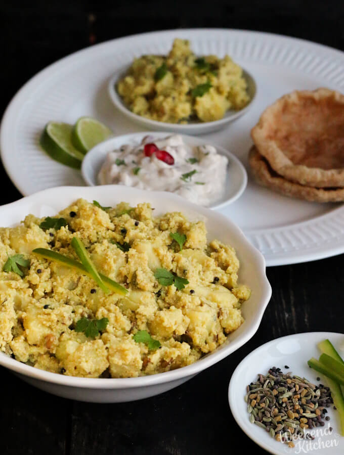
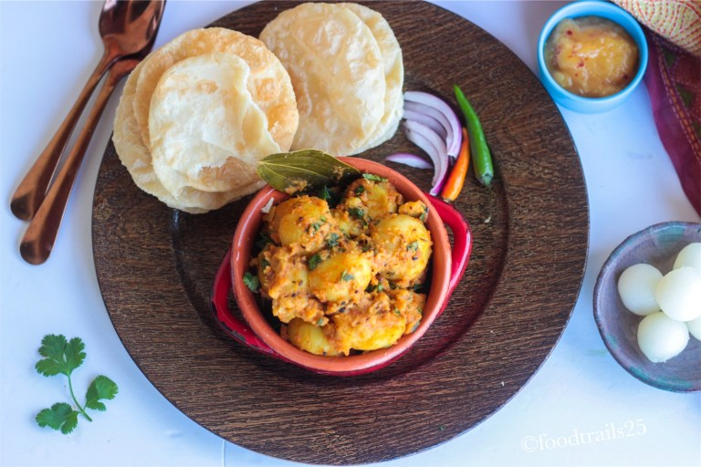

hey FooDies!! Welcome to FooDland..
bengal is all about food and happyness.Bengal is known as the land of 'Maach aar Bhaat’ which means ‘fish and rice'.West Bengal is not just about machh bhaat and the sweets. It has a lot more to it and is a haven for both vegetarian and non-vegetarian foodies. so here is top 8 bengali dishes for you.
alu posto is a classic Bengali dish. Sparing in its use of spices, this preparation relies on the flavours of potatoes, green chillies and nigella seeds for its taste. What stands out, however, is the nutty flavour of the roasted poppy paste, which also provides body and texture to the gravy. This apparently bland looking dish with just potato and posto is capable of rousing much passion among Bengalis. Although alu posto is cooked without onion or garlic, in our family we sometimes add a little fried onion to the alu posto for a pleasant variation.
Luchi recipe with step by step photos – luchi is loved by many foodies. To enjoy luchi you have to be a real foodie otherwise the idea of Poori made with all purpose flour and deep fried in ghee will always be at the back of your mind and you won’t be able to enjoy these delicious fried bread from bengal.You must try this delicious Bengali Aloo Dum Recipe where the potatoes that are simmered in spicy tomato onion garlic and a yogurt gravy. Serve along with Luchi and Begun Bhaja for a weekend lunch or dinner.
